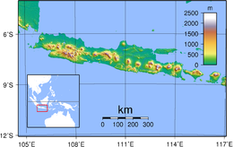
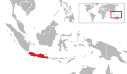

Java
Native name: | |
|---|---|
|  Topography of Java | |
|  | |
| Geography | |
| Location | |
| Coordinates | 72930S 1100016E / 7.49167S 110.00444ECoordinates: 72930S 1100016E / 7.49167S 110.00444E |
| Archipelago | Greater Sunda Islands |
| Area | 129,904 km2 (50,156 sq mi) |
| Area rank | 13th |
| Highest elevation | 3,676 m (12060 ft) |
| Highest point | Semeru |
| Administration | |
| Provinces | Banten, Special Capital Region of Jakarta, West Java, Central Java, East Java, Yogyakarta Special Region |
| Largest settlement | Jakarta (pop. 10,562,088) |
| Demographics | |
| Population | 147,795,436 (2020) |
| Pop. density | 1,121/km2 (2903/sq mi) |
| Ethnic groups | Javanese (inc. Tenggerese, Osing, Banyumasan, Cirebonese), Sundanese (inc. Bantenese, Baduy, Cirebonese), Madurese (inc. Pendalungan) Betawi etc. |
{kind=link}
{kind=link}
{kind=link}
Java (Indonesian: Jawa, Indonesian pronunciation: [dawa]; Javanese: ; Sundanese: ) is one of the Greater Sunda Islands in Indonesia. It is bordered by the Indian Ocean to the south and the Java Sea to the north. With a population of 151.8 million, including the inhabitants of its surrounding islands, principally Madura, Java constitutes 56.1 percent of the Indonesian population. 147.7 million people live on Java itself, making it the world's most populous island.[1]
Indonesia's capital city, Jakarta, is on Java's northwestern coast. Much of the well-known part of Indonesian history took place on Java. It was the centre of powerful Hindu-Buddhist empires, the Islamic sultanates, and the core of the colonial Dutch East Indies. Java was also the center of the Indonesian struggle for independence during the 1930s and 1940s. Java dominates Indonesia politically, economically and culturally. Four of Indonesia's eight UNESCO world heritage sites are located in Java: Ujung Kulon National Park, Borobudur Temple, Prambanan Temple, and Sangiran Early Man Site.
Formed by volcanic eruptions due to geologic subduction of the Australian Plate under the Sunda Plate, Java is the 13th largest island in the world and the fifth largest in Indonesia by landmass at about 138,800 square kilometres (53,600 sq mi). A chain of volcanic mountains is the eastwest spine of the island.
Four main languages are spoken on the island: Javanese, Sundanese, Madurese, and Betawi, where Javanese and Sundanese are the most spoken.[2] Only two ethnic groups are native to the islandthe Javanese in the central and eastern parts and Sundanese in the western parts. The Madurese in the Eastern salient of Java are migrants from Madura Island, while the Betawi in the capital city of Jakarta are hybrids from various ethnic groups in Indonesia. Most residents are bilingual, speaking Indonesian (the official language of Indonesia) as their first or second language. While the majority of the people of Java are Muslim, Java's population comprises people of diverse religious beliefs, ethnicities, and cultures.[3]
Java is divided into four administrative provinces: Banten, West Java, Central Java, and East Java, and two special regions, Jakarta and Yogyakarta.
Etymology[edit]
The origins of the name "Java" are not clear. One possibility is that the island was named after the jwa-wut plant, which was said to be common in the island during the time, and that prior to Indianization the island had different names.[4] There are other possible sources: the word ja and its variations mean "beyond" or "distant".[5] And, in Sanskrit yava means barley, a plant for which the island was famous.[5] "Yavadvipa" is mentioned in India's earliest epic, the Ramayana. Sugriva, the chief of Rama's army, dispatched his men to Yavadvipa, the island of Java, in search of Sita.[6] It was hence referred to in India by the Sanskrit name "yvaka dvpa" (dvpa = island). Java is mentioned in the ancient Tamil text Manimekalai by Chithalai Chathanar which states that Java had a kingdom with a capital called Nagapuram.[7][8][9] Another source states that the word "Java" is derived from a Proto-Austronesian root word, meaning "home".[10] The great island of Iabadiu or Jabadiu was mentioned in Ptolemy's Geographia composed around 150 CE in the Roman Empire. Iabadiu is said to mean "barley island", to be rich in gold, and have a silver town called Argyra at the west end. The name indicates Java[11] and seems to be derived from the Sanskrit name Java-dvipa (Yavadvipa).
The annual news of Songshu and Liangshu referred to Java as She-po (5th century CE), He-ling (640818), then called it She-po again until the Yuan dynasty (12711368), where they began mentioning Zhao-Wa ().[12] According to Ma Huan's book (the Yingya Shenlan), the Chinese called Java as Chao-Wa, and the island was called (She-p or She-b) in the past.[13] Sulaiman al-Tajir al-Sirafi mentioned two notable island which separated Arab and China: One is 800 farsakh long Al-Rami, which is identified as Sumatra, and the other is Zabaj (Arabic: , Indonesian: Sabak), 400 farsakh in length, identified as Java.[14]:3031 When John of Marignolli returned from China to Avignon, he stayed at the Kingdom of Saba for a few months, which he said had many elephants and was led by a queen; Saba may be his interpretation of She-b.[15] Afanasij Nikitin, a merchant from Tver (in Russia), travelled to India in 1466 and described the land of java, which he call (shabait/abajte).[16][17]
Geography[edit]
.JPG){kind=link}
Java lies between Sumatra to the west and Bali to the east. Borneo lies to the north, and Christmas Island is to the south. It is the world's 13th largest island. Java is surrounded by the Java Sea to the north, Sunda Strait to the west, the Indian Ocean to the south and Bali Strait and Madura Strait in the east.
Java is almost entirely of volcanic origin; it contains thirty-eight mountains forming an eastwest spine that have at one time or another been active volcanoes. The highest volcano in Java is Mount Semeru, 3,676 metres (12,060 ft). The most active volcano in Java and also in Indonesia is Mount Merapi, 2,930 metres (9,610 ft). In total, Java has more than 150 mountains.
Java's mountains and highlands split the interior into a series of relatively isolated regions suitable for wet-rice cultivation; the rice lands of Java are among the richest in the world.[18] Java was the first place where Indonesian coffee was grown, starting in 1699. Today, coffea arabica is grown on the Ijen Plateau by small-holders and larger plantations.
{kind=link}
The area of Java is about 150,000 square kilometres (58,000 sq mi).[18] It is about 1,000 km (620 mi) long and up to 210 km (130 mi) wide. The island's longest river is the 600 km long Solo River.[19] The river rises from its source in central Java at the Lawu volcano, then flows north and eastward to its mouth in the Java Sea near the city of Surabaya. Other major rivers are Brantas, Citarum, Cimanuk and Serayu.
The average temperature ranges from 22 C (72 F) to 29 C (84 F); average humidity is 75%. The northern coastal plains are normally hotter, averaging 34 C (93 F) during the day in the dry season. The south coast is generally cooler than the north, and highland areas inland are even cooler.[20] The wet season begins in November and ends in April. During that rain falls mostly in the afternoons and intermittently during other parts of the year. The wettest months are January and February.
West Java is wetter than East Java, and mountainous regions receive much higher rainfall. The Parahyangan highlands of West Java receive over 4,000 millimetres (160 in) annually, while the north coast of East Java receives 900 millimetres (35 in) annually.
Natural environment[edit]
{kind=link}
The natural environment of Java is tropical rainforest, with ecosystems ranging from coastal mangrove forest on the north coast, rocky coastal cliffs on the southern coast, and low-lying tropical forest to high altitude rainforest on the slopes of mountainous volcanic regions in the interior. The Javan environment and climate gradually alters from west to east; from wet and humid dense rainforest in western parts, to a dry savanna environment in the east, corresponding to the climate and rainfall in these regions.
{kind=link}
Originally Javan wildlife supported a rich biodiversity, where numbers of endemic species of flora and fauna flourished; such as the Javan rhinoceros,[21] Javan banteng, Javan warty pig, Javan hawk-eagle, Javan peafowl, Javan silvery gibbon, Javan lutung, Java mouse-deer, Javan rusa, and Javan leopard. With over 450 bird species and 37 endemic species, Java is a birdwatcher's paradise.[22] There are about 130 freshwater fish species in Java.[23] There are also several endemic amphibian species in Java, including 5 species of tree frogs.
Since ancient times, people have opened the rainforest, altered the ecosystem, shaped the landscapes and created rice paddy and terraces to support the growing population. Javan rice terraces have existed for more than a millennium and had supported ancient agricultural kingdoms. The growing human population has put severe pressure on Java's wildlife, as rainforests were diminished and confined to highland slopes or isolated peninsulas. Some of Java's endemic species are now critically endangered, with some already extinct; Java used to have Javan tigers and Javan elephants, but both have been rendered extinct. Today, several national parks exist in Java that protect the remnants of its fragile wildlife, such as Ujung Kulon, Mount Halimun-Salak, Gede Pangrango, Baluran, Meru Betiri, Bromo Tengger Semeru and Alas Purwo.
History[edit]
{kind=link}
Fossilised remains of Homo erectus, popularly known as the "Java Man", dating back 1.7 million years were found along the banks of the Bengawan Solo River.[24]
The island's exceptional fertility and rainfall allowed the development of wet-field rice cultivation, which required sophisticated levels of cooperation between villages. Out of these village alliances, small kingdoms developed. The chain of volcanic mountains and associated highlands running the length of Java kept its interior regions and peoples separate and relatively isolated.[25] Before the advent of Islamic states and European colonialism, the rivers provided the main means of communication, although Java's many rivers are mostly short. Only the Brantas and Solo rivers could provide long-distance communication and this way their valleys supported the centers of major kingdoms. A system of roads, permanent bridges, and toll gates is thought to have been established in Java by at least the mid-17th century. Local powers could disrupt the routes as could the wet season and road use was highly dependent on constant maintenance. Consequently, communication between Java's population was difficult.[18]
The emergence of civilization on the island of Java is often associated with the story of Aji Saka from 78 AD. Although Aji Saka is said to be the bearer of civilization on Java, the story received several objections and rebuttals from other historical sources. Valmiki's Ramayana, made around 500 BC, records that Java already had a governmental organization long before the story:
"Yawadwipa is decorated with seven kingdoms, gold and silver islands, rich in gold mines, and there is Cicira (cold) Mountain that touches the sky with its peak."[26]:6
According to Chinese records, the Javanese kingdom was founded in 65 BC, or 143 years before the story of Aji Saka began.[27]:5556
The story of Aji Saka is a Neo Javanese story. This story has not yet been found to be relevant in the Old Javanese text. This story tells of events in the Medang Kamulan kingdom in Java in the past. At that time, the king of Medang Kamulan Prabu Dewata Cengkar was replaced by Aji Saka. This story is considered as an allegory of the entry of Indians into Java. Referring to the Liang dynasty information, the Javanese kingdom was divided into two: the pre-Hinduism kingdom and the post-Hindu kingdom, which began in 78 AD.[14]:5 and 7
Hindu-Buddhist kingdoms era[edit]
{kind=link}
{kind=link}
The Taruma and Sunda kingdoms of western Java appeared in the 4th and 7th centuries respectively, while the Kalingga Kingdom sent embassies to China starting in 640.[28]:53,79 However, the first major principality was the Medang Kingdom that was founded in central Java at the beginning of the 8th century. Medang's religion centered on the Hindu god Shiva, and the kingdom produced some of Java's earliest Hindu temples on the Dieng Plateau. Around the 8th century, the Sailendra dynasty rose in Kedu Plain and become the patron of Mahayana Buddhism. This ancient kingdom built monuments such as the 9th century Borobudur and Prambanan in central Java.
Around the 10th century, the center of power shifted from central to eastern Java. The eastern Javanese kingdoms of Kediri, Singhasari and Majapahit were mainly dependent on rice agriculture, yet also pursued trade within the Indonesian archipelago, and with China and India. Majapahit was established by Wijaya,[28]:201 and by the end of the reign of Hayam Wuruk (r. 135089) it claimed sovereignty over the entire Indonesian archipelago, although control was likely limited to Java, Bali, and Madura. Hayam Wuruk's prime minister, Gajah Mada, led many of the kingdom's territorial conquests.[28]:234 Previous Javanese kingdoms had their power based on agriculture, however, Majapahit took control of ports and shipping lanes and became Java's first commercial empire. With the death of Hayam Wuruk and the coming of Islam to Indonesia, Majapahit went into decline.[28]:241
Spread of Islam and rise of Islamic sultanates[edit]
Islam became the dominant religion in Java at the end of the 16th century. During this era, the Islamic kingdoms of Demak, Cirebon, and Banten were ascendant. The Mataram Sultanate became the dominant power of central and eastern Java at the end of the 16th century. The principalities of Surabaya and Cirebon were eventually subjugated such that only Mataram and Banten were left to face the Dutch in the 17th century.
Colonial periods[edit]
{kind=link}
Java's contact with the European colonial powers began in 1522 with a treaty between the Sunda kingdom and the Portuguese in Malacca. After its failure, the Portuguese presence was confined to Malacca and to the eastern islands. In 1596, a four-ship expedition led by Cornelis de Houtman was the first Dutch contact with Indonesia.[29] By the end of the 18th century the Dutch had extended their influence over the sultanates of the interior through the Dutch East India Company in Indonesia. Internal conflict prevented the Javanese from forming effective alliances against the Dutch. Remnants of the Mataram survived as the Surakarta (Solo) and Yogyakarta principalities. Javanese kings claimed to rule with divine authority and the Dutch helped them to preserve remnants of a Javanese aristocracy by confirming them as regents or district officials within the colonial administration.
Java's major role during the early part of the colonial period was as a producer of rice. In spice-producing islands like Banda, rice was regularly imported from Java, to supply the deficiency in means of subsistence.[30]
During the Napoleonic wars in Europe, the Netherlands fell to France, as did its colony in the East Indies. During the short-lived Daendels administration, as French proxy rule on Java, the construction of the Great Post Road was commenced in 1808. The road, spanning from Anyer in Western Java to Panarukan in East Java, served as a military supply route and was used in defending Java from British invasion.[31] In 1811, Java was captured by the British, becoming a possession of the British Empire, and Sir Stamford Raffles was appointed as the island's governor. In 1814, Java was returned to the Dutch under the terms of the Treaty of Paris.[32]
{kind=link}
In 1815, there may have been five million people in Java.[33] In the second half of the 18th century, population spurts began in districts along the north-central coast of Java, and in the 19th century population grew rapidly across the island. Factors for the great population growth include the impact of Dutch colonial rule including the imposed end to civil war in Java, the increase in the area under rice cultivation, and the introduction of food plants such as cassava and maize that could sustain populations that could not afford rice.[34] Others attribute the growth to the taxation burdens and increased expansion of employment under the Cultivation System to which couples responded by having more children in the hope of increasing their families ability to pay tax and buy goods.[35] Cholera claimed 100,000 lives in Java in 1820.[36]
The advent of trucks and railways where there had previously only been buffalo and carts, telegraph systems, and more coordinated distribution systems under the colonial government all contributed to famine elimination in Java, and in turn, population growth. There were no significant famines in Java from the 1840s through to the Japanese occupation in the 1940s.[37] However, other sources claimed the Dutch's Cultivation system is linked to famines and epidemics in the 1840s, firstly in Cirebon and then Central Java, as cash crops such as indigo and sugar had to be grown instead of rice.
Independence[edit]
Indonesian nationalism first took hold in Java in the early 20th century, and the struggle to secure the country's independence following World War II was centered in Java. In 1949, Indonesian independence was recognized.
Administration[edit]
{kind=link}
Java is divided into four provinces and two special regions:
- Banten, capital: Serang
- West Java, capital: Bandung
- Central Java, capital: Semarang
- East Java, capital: Surabaya
- Special Capital Region of Jakarta
- Special Region of Yogyakarta, capital: Yogyakarta
Demography[edit]
Demographic profile[edit]
{kind=link}
| Year | Pop. | % |
|---|---|---|
| 1961 | 63,059,575 | |
| 1971 | 76,086,320 | +20.7% |
| 1980 | 91,269,528 | +20.0% |
| 1990 | 107,581,306 | +17.9% |
| 2000 | 121,352,608 | +12.8% |
| 2010 | 136,610,590 | +12.6% |
| 2015 | 145,013,583 | +6.2% |
| 2020 | 151,591,262 | +4.5% |
| Refers to the administrative region Source: [38][39][40] | ||
Java has been traditionally dominated by an elite class, while the people in the lower classes were often involved in agriculture and fishing. The elite class in Java has evolved over the course of history, as cultural wave after cultural wave immigrated to the island. There is evidence that South Asian emigres were among this elite, as well as Arabian and Persian immigrants during the Islamic eras. More recently, Chinese immigrants have also become part of the economic elite of Java. Although politically the Chinese generally remain sidelined, there are notable exceptions, such as the former governor of Jakarta, Basuki Tjahaja Purnama. Though Java is increasingly becoming more modern and urban, only 75% of the island has electricity. Villages and their rice paddies are still a common sight. Unlike the rest of Java, the population growth in Central Java remains low. Central Java however has a younger population than the national average.[41] The slow population growth can in part be attributed to the choice by many people to leave the more rural Central Java for better opportunities and higher incomes in the bigger cities.[42] Java's population continues to rapidly increase despite many Javanese leaving the island. This is somewhat due to the fact that Java is the business, academic, and cultural hub of Indonesia, which attracts millions of non-Javanese people to its cities. The population growth is most intense in the regions surrounding Jakarta and Bandung, which is reflected through the demographic diversity in those areas.
Population development[edit]
With a combined population of 151.6 million in the 2020 census (including Madura's 4.0 million),[43] Java is the most populous major island in the world and is home to 56% of Indonesia's population.[43] At nearly 1,200 people per km2 in 2020, it is also one of the most densely populated parts of the world, on par with Bangladesh. Every region of the island has numerous volcanoes, with the people left to share the remaining flatter land. Because of this, many coasts are heavily populated and cities ring around the valleys surrounding volcanic peaks.
The population growth rate more than doubled in economically depressed Central Java in the latest 20102020 period vs 20002010, indicative of migration or other issues; there were significant volcanic eruptions during the earlier period. Approximately 45% of the population of Indonesia is ethnically Javanese,[44] while Sundanese make a large portion of Java's population as well.
The western third of the island (West Java, Banten, and DKI Jakarta) has an even higher population density, of nearly 1,550 per square kilometer and accounts for the lion's share of the population growth of Java.[43] It is home to three metropolitan areas, Greater Jakarta (with outlying areas of Greater Serang and Greater Sukabumi), Greater Bandung, and Greater Cirebon.
| Province or Special Region | Capital | Area km2 |
Area % |
Population census of 2000[45] |
Population census of 2010[45] |
Population census of 2020[46] |
Population density in 2020 |
|---|---|---|---|---|---|---|---|
| Banten | Serang | 9,662.92 | 7.1 | 8,098,277 | 10,632,166 | 11,904,562 | 1,232 |
| DKI Jakarta | 664.01 | 0.5 | 8,361,079 | 9,607,787 | 10,562,088 | 15,907 | |
| West Java | Bandung | 35,377.76 | 27.1 | 35,724,093 | 43,053,732 | 48,274,160 | 1,365 |
| Western Java (3 areas above) |
45,704.69 | 34.7 | 52,183,449 | 63,293,685 | 70,740,810 | 1,548 | |
| Central Java | Semarang | 32,800.69 | 25.3 | 31,223,258 | 32,382,657 | 36,516,035 | 1,113 |
| Yogyakarta | Yogyakarta | 3,133.15 | 2.4 | 3,121,045 | 3,457,491 | 3,668,719 | 1,171 |
| Central Java Region (2 areas above) |
35,933.84 | 27.7 | 34,344,303 | 35,840,148 | 40,184,754 | 1,118 | |
| East Java | Surabaya | 47,799.75 | 37.3 | 34,765,993 | 37,476,757 | 40,665,696 | 851 |
| Region Administered as Java | Jakarta | 129,438.28 | 100% | 121,293,745 | 136,610,590 | 151,591,260 | 1,171 |
|
5,025.30 | 3.3 | 3,230,300 | 3,622,763 | 4,004,564 | 797 | |
|
124,412.98 | 96.7 | 118,063,445 | 132,987,827 | 147,586,696 | 1,186 |
1) Other islands are included in this figure, but are very small in population and area, Nusa Barung 100 km2, Bawean 196 km2, Karimunjawa 78 km2, Kambangan 121 km2, Panaitan 170 km2, Thousand Islands 8.7 km2 with a combined population of roughly 90,000.
2) Land area of provinces updated in 2010 Census figures, areas by 2020 may be different from past results.
From the 1970s to the fall of the Suharto regime in 1998, the Indonesian government ran transmigration programs aimed at resettling the population of Java on other less-populated islands of Indonesia. This program has met with mixed results, sometimes causing conflicts between the locals and the recently arrived settlers. Nevertheless, it has caused Java's share of the nation's population to progressively decline.
Jakarta and its outskirts, being the dominant metropolis, is also home to people from all over the nation. East Java is also home to ethnic Balinese, as well as large numbers of Madurans due to their historic poverty.
Ethnicity and culture[edit]
{kind=link}
Despite its large population and in contrast to the other larger islands of Indonesia, Java is comparatively homogeneous in ethnic composition. Only two ethnic groups are native to the islandthe Javanese and Sundanese. A third group is the Madurese, who inhabit the island of Madura off the northeast coast of Java, and have immigrated to East Java in large numbers since the 18th century.[47] The Javanese comprise about two-thirds of the island's population, while the Sundanese and Madurese account for 38% and 10% respectively.[47] The fourth group is the Betawi people that speak a dialect of Malay, they are the descendants of the people living around Batavia from around the 17th century. Betawis are creole people, mostly descended from various Indonesian archipelago ethnic groups such as Malay, Sundanese, Javanese, Balinese, Minang, Bugis, Makassar, Ambonese, mixed with foreign ethnic groups such as Portuguese, Dutch, Arab, Chinese and Indian brought to or attracted to Batavia to meet labour needs. They have a culture and language distinct from the surrounding Sundanese and Javanese.
.jpg){kind=link}
The Javanese prose text Tantu Pagelaran (circa 15th century) explained the mythical origin of the island and its volcanic nature.
Four major cultural areas exist on the island: the Central part of Java or Yogyakarta is the Javanese people heartland and the north coast of the pasisir region, the Sunda lands (Sundanese: , Tatar Sunda) in the Western part of Java and Parahyangan as the heartland, the eastern salient of java also known as Blambangan. Madura makes up a fifth area having close cultural ties with coastal eastern Java.[47] The kejawen of Javanese culture is the island's most dominant. Java's remaining aristocracy is based here, and it is the region from where the majority of Indonesia's army, business, and political elite originate. Its language, arts, and etiquette are regarded as the island's most refined and exemplary.[47] The territory from Banyumas in the west through to Blitar in the east and encompasses Indonesia's most fertile and densely populated agricultural land.[47]
{kind=link}
In the southwestern part of Central Java, which is usually named the Banyumasan region, a cultural mingling occurred; bringing together Javanese culture and Sundanese culture to create the Banyumasan culture.[48] In the central Javanese court cities of Yogyakarta and Surakarta, contemporary kings trace their lineages back to the pre-colonial Islamic kingdoms that ruled the region, making those places especially strong repositories of classical Javanese culture. Classic arts of Java include gamelan music and wayang puppet shows.
Java was the site of many influential kingdoms in the Southeast Asian region,[49] and as a result, many literary works have been written by Javanese authors. These include Ken Arok and Ken Dedes, the story of the orphan who usurped his king, and married the queen of the ancient Javanese kingdom; and translations of Ramayana and Mahabharata. Pramoedya Ananta Toer is a famous contemporary Indonesian author, who has written many stories based on his own experiences of having grown up in Java, and takes many elements from Javanese folklore and historical legends.
Languages[edit]
{kind=link}
The three major languages spoken on Java are Javanese, Sundanese and Madurese. Other languages spoken include Betawi (a Malay dialect local to the Jakarta region), Osing, Banyumasan, and Tenggerese (closely related to Javanese), Baduy and Bantenese (closely related to Sundanese), Kangeanese (closely related to Madurese), and Balinese.[50] The vast majority of the population also speaks Indonesian, often as a second language.
Religion[edit]
Java has been a melting pot of religions and cultures, which has created a broad range of religious belief.
Indian influences came first with Shaivism and Buddhism penetrating deeply into society, blending with indigenous tradition and culture.[51] One conduit for this were the ascetics, called resi, who taught mystical practices. A resi lived surrounded by students, who took care of their master's daily needs. Resi's authorities were merely ceremonial. At the courts, Brahmin clerics and pudjangga (sacred literati) legitimised rulers and linked Hindu cosmology to their political needs.[51] Small Hindu enclaves are scattered throughout Java, but there is a large Hindu population along the eastern coast nearest Bali, especially around the town of Banyuwangi.
The coming of Islam, strengthened the status structure of this traditional religious pattern. More than 90 percent of the people of Java are Muslims, on a broad continuum between abangan (more traditional) and santri (more modernist). The Muslim scholar of the writ (Kyai) became the new religious elite as Hindu influences receded. Islam recognises no hierarchy of religious leaders nor a formal priesthood, but the Dutch colonial government established an elaborate rank order for mosque and other Islamic preaching schools. In Javanese pesantren (Islamic schools), The Kyai perpetuated the tradition of the resi. Students around him provided his needs, even peasants around the school.[51]
A Hindu shrine dedicated to King Siliwangi in Pura Parahyangan Agung Jagatkarta, Bogor.
Masjid Gedhe Kauman in Yogyakarta, build in traditional Javanese multi-tiered roof.
Ganjuran Church in Bantul, built in traditional Javanese architecture.
{kind=link}
{kind=link}
{kind=link}
{kind=link}
Pre-Islamic Javan traditions have encouraged Islam in a mystical direction. There emerged in Java a loosely structured society of religious leadership, revolving around kyais, possessing various degrees of proficiency in pre-Islamic and Islamic lore, belief and practice.[51] The kyais are the principal intermediaries between the villages masses and the realm of the supernatural. However, this very looseneess of kyai leadership structure has promoted schism. There were often sharp divisions between orthodox kyais, who merely instructed in Islamic law, with those who taught mysticism and those who sought reformed Islam with modern scientific concepts. As a result, there is a division between santri, who believe that they are more orthodox in their Islamic belief and practice, with abangan, who have mixed pre-Islamic animistic and Hindu-Indian concepts with a superficial acceptance of Islamic belief.[51]
There are also Christian communities, mostly in the larger cities, though some rural areas of south-central Java are strongly Roman Catholic. Buddhist communities also exist in the major cities, primarily among the Chinese Indonesian. The Indonesian constitution recognises six official religions.
A wider effect of this division is the number of sects. In the middle of 1956, the Department of Religious Affairs in Yogyakarta reported 63 religious sects in Java other than the official Indonesian religions. Of these, 35 were in Central Java, 22 in West Java and six in East Java.[51] These include Kejawen, Sumarah, Subud, etc. Their total membership is difficult to estimate as many of their adherents identify themselves with one of the official religions.[52] Sunda Wiwitan is a traditional Sundanese religion, its adherents still exist in several villages.[53]
Economy[edit]
{kind=link}
{kind=link}
Initially the economy of Java relied heavily on rice agriculture. Ancient kingdoms such as the Tarumanagara, Mataram, and Majapahit were dependent on rice yields and tax. Java was famous for rice surpluses and rice export since ancient times, and rice agriculture contributed to the population growth of the island. Trade with other parts of Asia such as ancient India and China flourished as early as the 4th century, as evidenced by Chinese ceramics found on the island dated to that period. Java also took part in the global trade of Maluku spice from ancient times in the Majapahit era, until well into the Dutch East India Company (VOC) era.
{kind=link}
The VOC set their foothold on Batavia in the 17th century and was succeeded by the Dutch East Indies in the 19th century. During these colonial times, the Dutch introduced the cultivation of commercial plants in Java, such as sugarcane, rubber, coffee, tea, and quinine. In the 19th and early 20th century, Javanese coffee gained global popularity. Thus, the name "Java" today has become a synonym for coffee.
{kind=link}
Java has been Indonesia's most developed island since the Dutch East Indies era and continues to be so today in the modern Republic of Indonesia. The road transportation networks that have existed since ancient times were connected and perfected with the construction of Java Great Post Road by Daendels in the early 19th century. It became the backbone of Java's road infrastructure and laid the base of Java North Coast Road (Indonesian: Jalan Pantura, abbreviation from "Pantai Utara"). The need to transport commercial produces such as coffee from plantations in the interior of the island to the harbour on the coast spurred the construction of railway networks in Java. Today, industry, business, trade and services flourished in major cities of Java, such as Jakarta, Surabaya, Semarang, and Bandung; while some traditional Sultanate cities such as Yogyakarta, Surakarta, and Cirebon preserved its royal legacy and has become the centre of art, culture and tourism. Industrial estates are also growing in towns on northern coast of Java, especially around Cilegon, Tangerang, Bekasi, Karawang, Gresik and Sidoarjo. The toll road highway networks was built and expanded since the New Order until the present day, connecting major urban centres and surrounding areas, such as in and around Jakarta and Bandung; also the ones in Cirebon, Semarang and Surabaya. In addition to these motorways, Java has 16 national highways.
Based on the statistical data by the year of 2012 released by Statistics Indonesia (Badan Pusat Statistik), Java alone contributes at least 57.51% of Indonesia's GDP or equivalent to US$504 billion.
See also[edit]
{kind=link}
References[edit]
- ^ "Hasil Sensus Penduduk 2020" (PDF) (in Indonesian). Statistics Indonesia. 21 January 2021. p. 9. Retrieved 21 January 2021.
- ^ Naim, Akhsan; Syaputra, Hendry (2011). Kewarganegaraan, Suku Bangsa, Agama, dan Bahasa Sehari-Hari Penduduk Indonesia: Hasil Sensus Penduduk 2010 (in Indonesian). Jakarta: Badan Pusat Statistik. p. 47. ISBN 9789790644175.
- ^ Stockdale, John Joseph; Bastin, John (2004-03-15). Island of Java. Periplus Editions (HK) Limited. ISBN 978-962-8734-23-8.
- ^ Raffles, Thomas E.: History of Java. Oxford University Press, 1965, p. 2.
- ^ Jump up to: a b Raffles, Thomas E.: History of Java. Oxford University Press, 1965, p. 3.
- ^ History Of Ancient India (portraits Of A Nation), 1/e. Sterling Publishers Pvt. Ltd. January 30, 2010. ISBN 9788120749108 via Google Books.
- ^ Hindu culture in ancient India by Sekharipuram Vaidyanatha Viswanatha, p. 177.
- ^ Tamil Literature by M. S. Purnalingam Pillai, p. 46.
- ^ The Tamils Eighteen Hundred Years Ago by V. Kanakasabhai, p. 11.
- ^ Hatley, R., Schiller, J., Lucas, A., Martin-Schiller, B., (1984). "Mapping cultural regions of Java" in: Other Javas away from the kraton. pp. 132.
- ^ J. Oliver Thomson (2013). History of Ancient Geography. Cambridge University Press. pp. 316317. ISBN 9781107689923.
- ^ Lombard, Denys (1990). The Javanese Crossroads: Essay of global history. ISBN 978-2713209499.
- ^ Mills, J.V.G. (1970). Ying-yai Sheng-lan: The Overall Survey of the Ocean Shores [1433]. Cambridge: Cambridge University Press.
- ^ Jump up to: a b Nugroho, Irawan Djoko (2011). Majapahit Peradaban Maritim. Suluh Nuswantara Bakti. ISBN 9786029346008.
- ^ Yule, Sir Henry (1913). Cathay and the way thither: being a collection of medieval notices of China vol. III. London: The Hakluyt Society.
- ^ Braginsky, Vladimir. 1998. Two Eastern Christian sources on medieval Nusantara. Bijdragen tot de Taal-, Land- en Volkenkunde. 154(3): 367396.
- ^ Zenkovsky, Serge A. (1974). Medieval Russia's epics, chronicles, and tales. New York: Dutton. pp. 345347. ISBN 0525473637.
- ^ Jump up to: a b c Ricklefs, M. C. (1990). A History of Modern Indonesia since c.1300 (2 ed.). London: MacMillan. p. 15. ISBN 978-0-333-57690-8.
- ^ "Management of Bengawan Solo River Area". Jasa Tirta I Corporation. 2006. Archived from the original on 2007-10-11.
- ^ "Climate, Weather, and Temperature of Java Indonesia". Retrieved 1 April 2014.
- ^ "Javan Rhinoceros (Rhinoceros sondaicus)". EDGE Evolutionarily Distinct and Globally Endangered. Retrieved 26 June 2012.
- ^ "Indonesia bird watching tour". wildlifenews.co.uk. Archived from the original on 9 February 2012. Retrieved 26 June 2012.
- ^ Nguyen, T. T. T., and S. S. De Silva (2006). Freshwater finfish biodiversity and conservation: an asian perspective. Biodiversity & Conservation 15(11): 35433568.
- ^ Pope, G. G. (1988). "Recent advances in far eastern paleoanthropology". Annual Review of Anthropology. 17: 4377. doi:10.1146/annurev.an.17.100188.000355. cited in Whitten, T.; Soeriaatmadja, R. E.; Suraya A. A. (1996). The Ecology of Java and Bali. Hong Kong: Periplus Editions Ltd. pp. 309312.; Pope, G. (15 August 1983). "Evidence on the Age of the Asian Hominidae". Proceedings of the National Academy of Sciences of the United States of America. 80 (16): 4, 9884992. Bibcode:1983PNAS...80.4988P. doi:10.1073/pnas.80.16.4988. PMC 384173. PMID 6410399. cited in Whitten, T.; Soeriaatmadja, R. E.; Suraya A. A. (1996). The Ecology of Java and Bali. Hong Kong: Periplus Editions Ltd. p. 309.; de Vos, J. P.; P. Y. Sondaar (9 December 1994). "Dating hominid sites in Indonesia" (PDF). Science Magazine. 266 (16): 4, 9884992. Bibcode:1994Sci...266.1726D. doi:10.1126/science.7992059. cited in Whitten, T; Soeriaatmadja, R. E.; Suraya A. A. (1996). The Ecology of Java and Bali. Hong Kong: Periplus Editions Ltd. p. 309.
- ^ Ricklefs (1991), pp. 1617.
- ^ Sastropajitno, Warsito (1958). Rekonstruksi Sedjarah Indonesia. Zaman Hindu, Yavadvipa, Srivijaya, Sailendra. Yogyakarta: PT. Pertjetakan Republik Indonesia.
- ^ W.P Groeneveldt (1880). Notes on the Malay Archipelago and Malacca Compiled from Chinese Sources. Batavia.
- ^ Jump up to: a b c d Coeds, George (1968). Walter F. Vella (ed.). The Indianized States of Southeast Asia. trans.Susan Brown Cowing. University of Hawaii Press. ISBN 978-0-8248-0368-1.
- ^ Ames, Glenn J. (2008). The Globe Encompassed: The Age of European Discovery, 15001700. p. 99.
- ^ St. John, Horace Stebbing Roscoe (1853). The Indian Archipelago: its history and present state, Volume 1. Longman, Brown, Green, and Longmans. p. 137.
- ^ Ekspedisi Anjer-Panaroekan, Laporan Jurnalistik Kompas. Pnerbit Buku Kompas, PT Kompas Media Nusantara, Jakarta Indonesia. November 2008. pp. 12. ISBN 978-979-709-391-4.
- ^ Atkins, James (1889). The Coins And Tokens of the Possessions And Colonies of the British Empire. London: Bernard Quaritch. p. 213.
- ^ "Java (island, Indonesia)". Encyclopdia Britannica. 31 January 2019.
- ^ Taylor (2003), p. 253.
- ^ Taylor (2003), pp. 253254.
- ^ Byrne, Joseph Patrick (2008). Encyclopedia of Pestilence, Pandemics, and Plagues: A-M. ABC-CLIO. p. 99. ISBN 978-0-313-34102-1.
- ^ Taylor (2003), p. 254.
- ^ Sensus Penduduk 1961 Republik Indonesia. Biro Pusat Statistik. 1962. p. 5.
- ^ "Statistics Indonesia". Bps.go.id. Archived from the original on 1 July 2013. Retrieved 17 July 2013.
- ^ "Estimasi Penduduk Menurut Umur Tunggal Dan Jenis Kelamin 2014 Kementerian Kesehatan" (PDF). Archived from the original (PDF) on 8 February 2014. Retrieved 20 February 2014.
- ^ Usia Kawin Pertama Rata-Rata Wanita Menurut Provinsi: Sensus Penduduk Tahun 1990, 2000 dan 2010 Archived 2015-06-29 at the Wayback Machine. Retrieved 16 August 2015.
- ^ Agus Maryono (30 March 2009). "Central Java strives to alleviate poverty". The Jakarta Post. Archived from the original on 8 September 2015. Retrieved 16 August 2015.
- ^ Jump up to: a b c "Population growth 'good for Papua'". The Jakarta Post. 23 August 2010. Archived from the original on 24 August 2010. Retrieved 30 August 2010.
- ^ Indonesia. The World Factbook. Central Intelligence Agency.
- ^ Jump up to: a b "Indonesia (Urban City Population): Provinces & Cities Statistics & Maps on City Population". Citypopulation.de. 2010-05-01. Retrieved 2013-07-17.
- ^ Indonesia: Urban Population of Cities Retrieved 22 December 2015.
- ^ Jump up to: a b c d e Hefner, Robert (1997). Java. Singapore: Periplus Editions. p. 58. ISBN 978-962-593-244-6.
- ^ "Java and Cambodia | Boundless Art History". courses.lumenlearning.com. Retrieved 2020-10-21.
- ^ See Wallace Stevens's poem "Tea" for an appreciative allusion to Javanese culture.
- ^ Languages of Java and Bali Archived 2017-02-16 at the Wayback Machine. Other sources may list some of these as dialects rather than languages.
- ^ Jump up to: a b c d e f van der Kroef, Justus M. (1961). "New Religious Sects in Java". Far Eastern Survey. 30 (2): 1825. doi:10.1525/as.1961.30.2.01p1432u. JSTOR 3024260.
- ^ Beatty, Andrew, Varieties of Javanese Religion: An Anthropological Account, Cambridge University Press 1999, ISBN 0-521-62473-8
- ^ Tempo: Indonesia's Weekly News Magazine. Arsa Raya Perdana. 2006.
Sources[edit]
- Taylor, Jean Gelman (2003). Indonesia: Peoples and Histories. New Haven and London: Yale University Press. ISBN 978-0-300-10518-6.
Further reading[edit]
| Wikivoyage has a travel guide for Java. |
- Cribb, Robert (2000). Historical Atlas of Indonesia. London and Honolulu: RoutledgeCurzon Press, University of Hawaii Press. ISBN 978-0-8248-2111-1.
- Padmo, Soegijanto (2000). Java and The Making of The Nation. Humaniora Journal, Gadjah Mada University.
{kind=link}
{kind=link}
{kind=link}
{kind=link}
{kind=link}
{kind=link}
{kind=link}
{kind=link}
{kind=link}
{kind=link}
{kind=link}
{kind=link}
{kind=link}
{kind=link}
{kind=link}
{kind=link}
{kind=link}
{kind=link}
.svg){kind=link}
{kind=link}
{kind=link}
{kind=link}
{kind=link}
{kind=link}
{kind=link}
{kind=link}
{kind=link}
{kind=link}
{kind=link}
{kind=link}
{kind=link}
{kind=link}
{kind=link}
{kind=link}